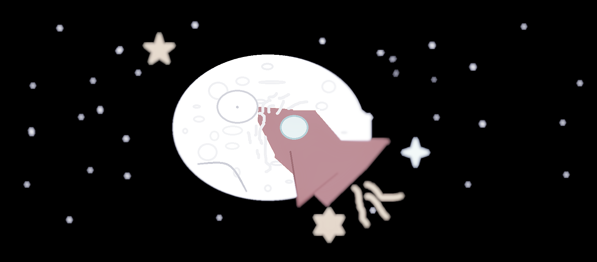

О проекте
Этот сайт посвящён первым фильмам в истории кино, рассказывающим о путешествиях на Луну. Здесь вы найдёте сюжеты, редкие кадры, видео и афиши таких картин, как «Путешествие на Луну» (1902), «Женщина на Луне» (1929) и других.
Выберите раздел ниже или в навигации сверху, чтобы узнать больше.